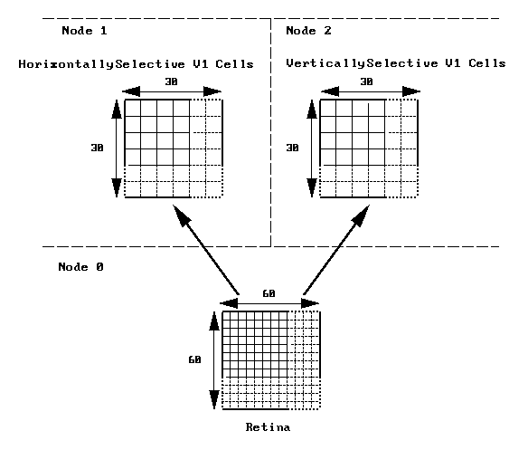

Orient_tut: 3-way decomposition
This example is based on the Orient_tut example which is discussed in the Book of Genesis. Please read that section of the book for background information. This is not intented to be a realistic model of visual cortex processing but rather a demonstation of how parallel Genesis can be used.
In this decomposition we simply assign the retinal cells to one node, the horizontally-selective V1 cells to a second node, and the vertically-selective V1 cells to a third node. The following diagram illustrates this division:

Each retinal cell makes connections onto a small subset of neurons in the horizontally-selective V1 population and the vertically-selective V1 population. To set up this network we first create the neurons on each of the nodes, then do a barrier to make sure each node has finished creating its elements, then connect up the neurons using the rvolumeconnect command. After doing another barrier, we display the neurons and run the simulation.
The limitation on parallelism in this decomposition is that no matter what size we make the retinal and V1 populations, we can still only run using 3 nodes.
The top level pGenesis script file for this example is partially included here:
// START UPTo run this example on your workstation:
paron -parallel -silent 0 -nodes 3 -output o.out \
-executable pgenesis
i_am_retina = {mynode} == 0
i_am_V1 = {mynode} == 1 || {mynode} == 2
if ({mynode} == 1)
dir = "horiz"
elif ({mynode} == 2)
dir = "vert"
end
// CREATE ELEMENTS ON EACH NODE
if (i_am_retina)
create_retina
setup_retinal_input
elif (i_am_V1)
create_V1
end
// CONNECT UP ELEMENTS
barrier // wait for all elements to be created
// on every node before trying to
// connect them up
if (i_am_retina)
connect_retina
end
// SET UP NETWORK DISPLAY
if (display)
if (i_am_retina)
display_retina
elif (i_am_V1)
display_V1
end
end
// SET UP NETWORK OUTPUT
if (output)
if (i_am_V1)
output_V1
end
end
// START SIMULATION
reset
if (i_am_retina)
if (batch)
echo Simulation started at {getdate}
autosweep horizontal
echo Simulation finished at {getdate}
exit@all
end
else
// wait for commands from the retinal node's
// control panel
barrier 7 100000
end